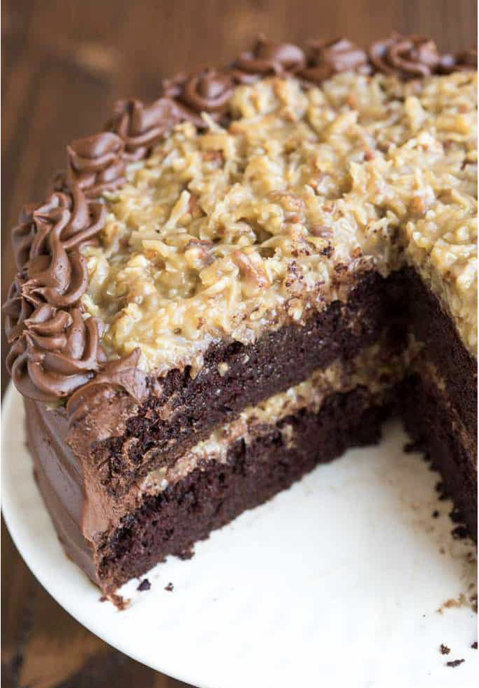

12/Feb
German Chocolate Cake
The BEST homemade German Chocolate Cake with layers of coconut pecan frosting and chocolate frosting. This cake is incredible!

I think the hundreds of reviews of this recipe speak for themselves, but let me add my own testament that this German Chocolate Cake is THE CAKE that every person in my family requested for their birthday growing up. I was super lucky, being a twin, because my mom would make both of our favorites: German chocolate cake for my sister, and carrot cake for me!
What is German Chocolate Cake? The name German chocolate cake is a little deceiving as it is not actually a German dessert and traditionally the cake is a lighter colored cake with a mild chocolate taste and the entire cake is usually covered in coconut pecan frosting. My family’s version is a chocolate cake with chocolate frosting covering the cake and coconut frosting on top and in the center of the cake. This cake seriously can’t be beat, especially if you’re a chocolate lover!
Decorating cake is easy! I used a wilton 2D tip for the swirls on top of this cake, but I also love the Wilton 1M tip. I use both tips with an Ateco flex 14” reusable piping bag. Those three items right there are my favorites for cake and cupcake decorating.
Make Ahead and Freezing Instructions: To Make Ahead: Both frostings (coconut and chocolate) can be made ahead and placed in a covered container in the fridge. The coconut frosting will keep for 1-2 weeks, depending on the freshness of the ingredients used. The chocolate frosting will keep for 2-3 weeks. Remove frostings from the fridge an hour before you’re ready to frost the cake, to give them time to come to room temperature. To Freeze: After baking the cake layers, allow them to cool completely, then wrap them well in plastic wrap and stick each layer in a ziplock freezer bag. Freeze for up to three months. Frost the cakes when they are frozen–they are much easier to frost this way! The assembled German Chocolate Cake can also be frozen, covered well, for 2-3 months (I recommend slicing the cake and wrapping each slice really well in plastic wrap, then placing in a freezer-safe container, for best results). Allow to come to room temperature before serving.